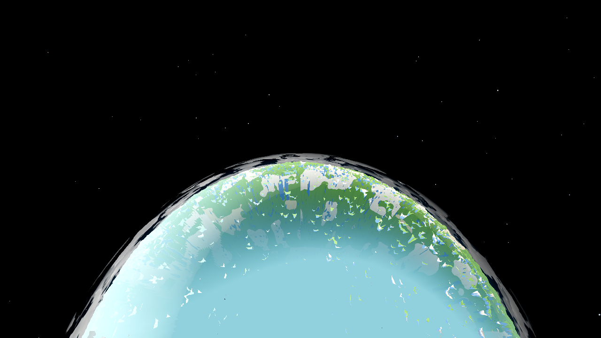
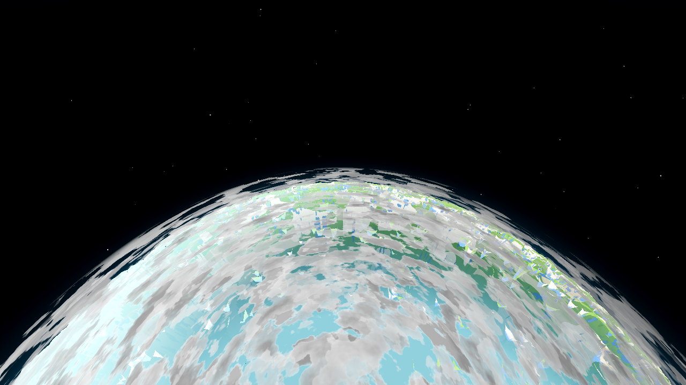
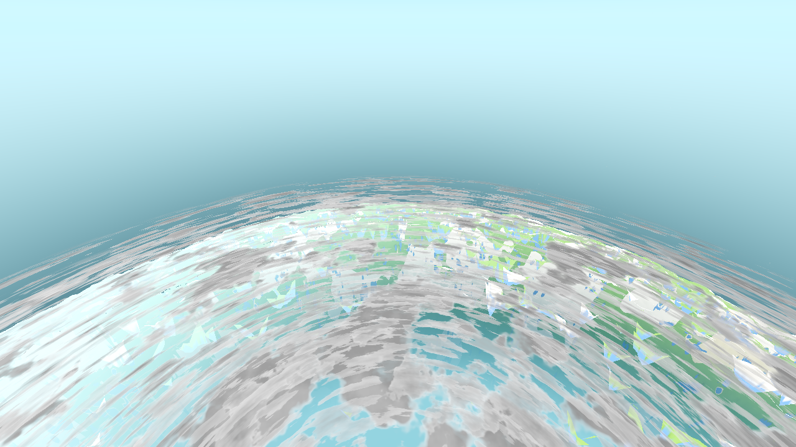
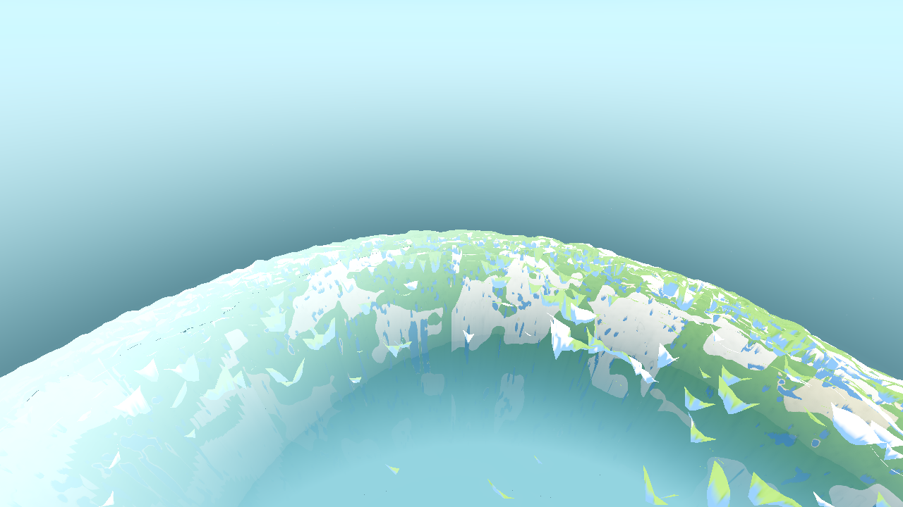
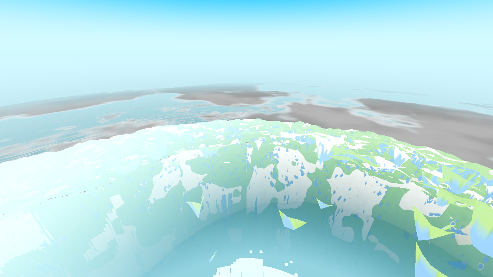
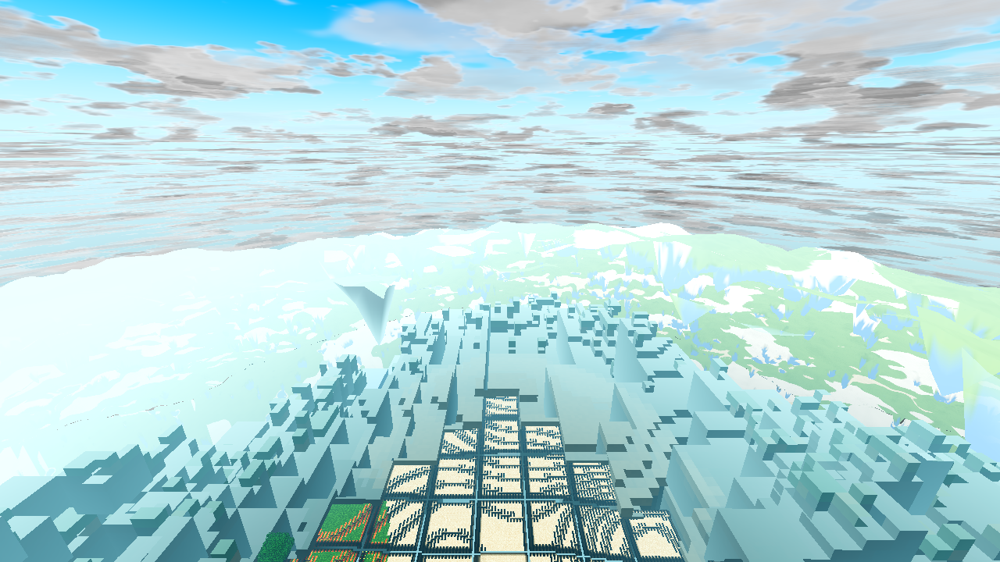
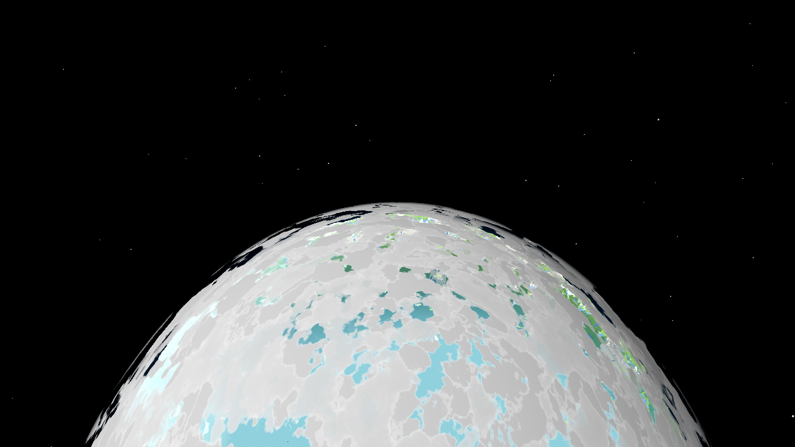
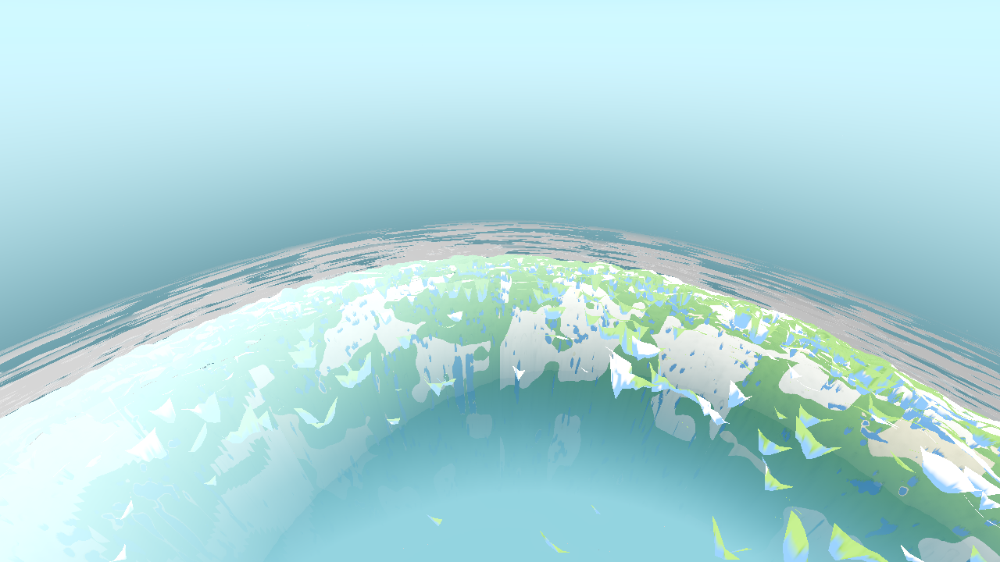

BEFORE — fog-colour diamond patch over the disc, streaky membrane deck, no visible glow:

AFTER — the body's own terrain (green land, teal water), no patch; fewer larger soft cloud masses; the rim glow present (S=1.0):

PLAN: plan.html · SPEC: spec.html · CONTINUITY: continuity.md
| # | User item | What was done | Status |
|---|---|---|---|
| 1 | “Too many clouds — less of them, but the individual clouds should be bigger and they should be volumetric” | cloud_layer.gdshader behind u_deck (Settings cloud_deck, default ON): the field runs at 1/3 frequency (masses ~3× wider), the coverage window tightens (fewer), the band troughs clear (real gaps), edges soften, and the masses get a volumetric read (puff brightness off the mid field + deepened core shading 0.70→0.58). u_deck<0.5 = the exact pre-AC-0401 path (verified by the deck-OFF A/B frames below). | DONE — renders |
| 2 | “Low LOD and satellite LOD share the same shader / low LOD should have NO limb effect, only fog” | They never shared a file, but they shared the effect: the limb rim the low-LOD view showed was the sky-pass glow (aero_sky_gradient, altitude-ungated) + the body's own haz on the far hemisphere. The glow now rides u_space behind u_limb_gate (Settings limb_space, default ON): no rim below the flight band, full rim from orbit. The low-LOD annulus (lod_avg.gdshader) stays fog-only (its haze crossfades into the same u_air the body carries — AC-0400's single-source seam target). The body keeps its limb haze. | DONE — renders |
| 3 | “Z-fighting between the clouds, the low LOD and the satellite LOD” | Separated by construction: (a) PARTITION — every near-field material (the 4 chunk_lit_* kinds, lod_avg, the 2 fluid_anim_*) now discards fragments at d ≥ u_fog_far (the body's own ownership wall, DayNight.fog_far — the same value on env.fog_depth_end); the annulus and the body never co-draw past the wall. (b) RADIUS ORDERING — satellite_body.gdshader gains a vertex stage that moves the displaced surface 2 m radially inward, so wherever the same terrain still coexists (relief straddling the wall), the near tiers win the depth test by construction. The cloud deck (transparent, no depth write) blends over — it never z-fights. The 2 m is 0.028° at R4000; the op window and the star-occlusion radius are untouched. | DONE — renders |
| 4 | “High-detail terrain should be hidden above a certain height — you shouldn't be able to see it from space — in the same way the satellite body dissolves in below the flight band; the threshold must be checked against the body's own so the two never both vanish or both show” | No new constant: the “certain height” IS the body's own fog wall (332 m view distance at the user's R24/F83). The near field obeys the same wall the body already owned (the partition above), so the high detail's “dissolve” is the engine fog fade on the way up, and the near field stops drawing exactly where the body's existence ramp begins — never both, by construction. From orbit the disc is the body alone: the planet, not the fog-colour patch of ground left behind. | DONE — renders |
| Setting | Default | Effect | Short-circuit | Env override |
|---|---|---|---|---|
cloud_deck | ON (the user asked — the modern_light precedent) | u_deck=1: the re-characterised deck; OFF: the exact r9 field + windows | shader-side: u_deck<0.5 selects the pre-AC-0401 constants; the new terms are 1.0/identity | AWECRAFT_CLOUDDECK=0|1 |
limb_space | ON (the user asked) | u_limb_gate=1: the rim rides u_space (no rim near the ground, full rim from orbit); OFF: the pre-AC-0401 rim at every altitude | shader-side: mix(1.0, u_space, 0.0) is exactly 1.0 | AWECRAFT_LIMB=0|1 |
The partition + the 2 m inset are DEFECT fixes (the flicker / the orbital patch), not look changes — no switch for them. Both Settings rows are on the Options page (menu.gd); values are read live by world.gd _ac0401_push() (no apply step owed).
No file was shared — lod_avg.gdshader (the annulus/low LOD), satellite_body.gdshader (the body) and chunk_lit_*.gdshader (the high tiers) were always separate files. What WAS shared: the near tiers violated the wall the body owned, so at low altitude the low-LOD view carried the body's effect (a 100%-fog annulus drawn over the body's displaced terrain, coplanar — the fog-colour diamond in the orbital frames + the 332–400 m flicker), and the sky-pass limb glow was altitude-ungated, so the “limb effect” showed at every altitude on top of the low LOD. After AC-0401: the low LOD fades into FOG ONLY (and ends at the wall), the rim is an orbit instrument, the body keeps its haze, and the layers are radius-ordered with a real 2 m gap.
Separation: strict fog-wall partition (near field discards at d ≥ u_fog_far) + 2 m radial body inset (radius ordering). The deck blends (transparent pass, no depth write) — it never participates in depth. Threshold: u_fog_far = DayNight.fog_far(render_radius, fog_start_pct) = 332.0 at the user's R24/F83 (render edge 400.0) — the body's OWN op-window start, pushed from the same value main.gd sets on env.fog_depth_end (one number, one home). The handoff is per-fragment VIEW DISTANCE, not altitude: the body's op = smoothstep(332, 400, d) and the near-field discard d ≥ 332 are the same window, so the high detail stops exactly where the body's existence begins — never both vanish (below the wall the body is discarded, the near field is the world) and never both show (above it the near field is discarded, the body owns the view; the 332–400 m band is the body fading in while its haz_d carries the single-source air colour — AC-0400's seam — so the band reads as the world's own fog). At the nadir the view distance ≈ the altitude, so the “certain height” where the high detail hides is ≈ the fog wall: the ladder confirms it — 120/300 m show the high-detail terrain (crisp to hazy), 700/1600/2600 m show only the body's baked surface.
| Gate | Result |
|---|---|
G0 --headless --quit + gate_census.py | 0 SCRIPT / 0 SHADER ERROR (rc 0) — .scratch/ac0401-g0.log |
| shaderforce (Forward+ lavapipe, 12 shipped shaders forced) | 12/12 verdict=ok, 0/0 census — .scratch/ac0401-shaderforce2.log |
SMOKE player;interact;light;fluids;genhash | ok:true, 0/0 census — .scratch/ac0401-smoke.log |
| genhash (generation untouched) | 25/25 byte-identical to the AC-0400-era set |
| boundary r4 (the single builder self-check) | ok/marker_ok/remesh_ok true; p50 13, p95 34, max 164, built_final 68, staged_dropped 2303 (≤2500), flap 84 — field-identical to the AC-0399 pre-change run — .scratch/ac0401-boundary-r4.log |
| RENDERS (the acceptance ladder, AC-0384 §25.7 recipe, R24/F83, T=0.5 frozen, CLOUD_T0=411200) | 8 frames, all Forward+/llvmpipe, all assert fog_far=332.0 render_edge=400.0, 0/0 each — below |
The SATDIAG cloud dump (satellite_body.gd _satdiag_clouds — a whole-tree walk) did float(null) whenever the shaderforce probe's pbox wore the cloud shader with NO parameters set (first diag tick inside the probe's 12-frame window) — a SCRIPT ERROR that failed the census on the very run the probe exists to measure. Intermittent (bake-time dependent), so it had not surfaced before. Hardened: non-float u_coverage reports cov=-1.000 in the diag line instead of throwing. The second shaderforce run is 0/0.
u_deck / u_limb_gate): main.gd is fence-locked by the parallel session, and the cloud/sky materials are its members. world.gd _ac0401_push() reaches them through the parent Main node (World is a direct child of Main), per-frame, change-gated. The shader-side defaults are OFF (the pre-AC-0401 paths), so a material without the push keeps the old look. Documented in ARCHITECTURE.md; if the fence lifts, the push can move back into main.gd _update_sky next to its siblings.satellite_body.gd (instrumentation only) and re-run clean.main.gd particle pool, game.gd/drop.gd/debug.gd) are in the live tree but were not touched; they are render-neutral for this ladder (the pool allocates an idle 200-slot ring; the snapshot run spawns no particles).Before set: tasks/AC-0384/ac0384-final-* (the AC-0384 round-12 captures, same recipe/seed/weather). After set: this folder. All 1280×720, Forward+/llvmpipe, planet preset (the frozen player flown to AWECRAFT_SAT_ALT + the terrain height above the spawn, looking at the tangent limb), T=0.5 frozen, CLOUD_T0=411200, R24/F83. Every log carries the mandated Vulkan … Forward+ … llvmpipe boot line and asserts fog_far=332.0 render_edge=400.0; all 8 census 0/0 (logs: .scratch/ac0401-runs/ac0401-*.log, capture script: capture.sh).
| Frame | SAT_ALT | S (SATDIAG) | Body op_nadir | Log | Census |
|---|---|---|---|---|---|
ac0401-after-descent-2600.png | 2600 | 1.000 | 1.000 | after-descent-2600.log | 0/0 |
ac0401-after-descent-1600.png | 1600 | 0.921 | 1.000 | after-descent-1600.log | 0/0 |
ac0401-after-descent-700.png | 700 | 0.132 | 1.000 | after-700.log | 0/0 |
ac0401-after-700-clouds-off.png | 700 | 0.132 | 1.000 | after-700-clouds-off.log (AWECRAFT_CLOUDS=0) | 0/0 |
ac0401-after-descent-300.png | 300 | 0.000 | 0.000 | after-300.log | 0/0 |
ac0401-after-descent-120.png | 120 | 0.000 | 0.000 | after-120.log | 0/0 |
ac0401-deckoff-2600.png | 2600 | 1.000 | 1.000 | deckoff-2600.log (AWECRAFT_CLOUDDECK=0) | 0/0 |
ac0401-deckoff-700.png | 700 | 0.132 | 1.000 | deckoff-700.log (AWECRAFT_CLOUDDECK=0) | 0/0 |
The player altitude in each run is SAT_ALT + 141 (the spawn terrain height), so the 700 frame sits at 841 m → S = smoothstep(500,2000,841) = 0.132 — the rim is at 13% there (visually gone), at full at 2600, at 92% at 1600. The rim-gate read per step: 1.000 / 0.921 / 0.132 / 0.000 / 0.000.
BEFORE — fog-colour diamond patch over the disc, streaky membrane deck, no visible glow:
AFTER — the body's own terrain (green land, teal water), no patch; fewer larger soft cloud masses; the rim glow present (S=1.0):

Findings: (item 4) the disc is now the satellite body's baked terrain — the uniform fog-colour wash and the bright cyan-white Manhattan diamond (the chunk render-footprint at 100% engine-fog colour, drawn over the body) are gone; at 2600 m every chunk fragment is far past the 332 m view-distance wall, so the near field discards entirely and the disc is the body alone (nadir box: bright-white fraction 54.9% → 0.0%, saturation 17.0 → 77.0 — the baked terrain, not the fog colour). (item 2) the limb rim glow is present at orbit (S=1.0 → the gate passes it through). (item 1) the deck reads as few, large, soft masses — the bright/low-saturation cloud wash over the disc drops from 66.9% (old character) to 11.1% (new character) on the settled frames (the deck-OFF frame measures 66.9%, so this is the switch alone, the partition already fixed in both), not the streaky membrane. (item 3) no coplanar flicker possible past the wall (strict d-partition) and no 2 m-depth ambiguity (the inset).
BEFORE — the fog wash covers most of the disc, the diamond prominent, dark rim:

AFTER — terrain + water across the disc, rim arc at the limb (92% of full), soft masses:

Findings: nadir patch luminance 214.4 → 199.9 with colour saturation 11.1 → 19.1 (fog wash → terrain, measured in the same 200×200 box); the rim glow at 92% (S=0.921) — the orbit read is intact on the way down; the disc edge is identical between the pair (r=858 px, centre 1170/1171 — the 2 m inset is sub-pixel at this scale, as designed).
BEFORE — dark band at the terrain horizon (the D3 smudge), fog wash to the 400 m edge, the diamond at the spawn:

AFTER — smooth terrain→fog→sky transition at the 332 m wall, crisp terrain colour, large soft masses (S=0.132 — the rim is 13%, visually gone):

Findings: the dark terrain-horizon band is gone (the annulus no longer crosses into the body's rim zone at 100% fog colour — it stops at the wall and the body's own limb haz carries the rim); the diamond is gone (at 700 m every chunk fragment is ≥ 700 m from the camera — all past the 332 m wall — so the near field discards entirely; pre-AC-0401 it drew at 100% fog colour, the bright Manhattan patch). The terrain visible at 700 m is the body's own surface (the 2 m baked colour over the 16 m displacement), not the high-detail chunks — item 4 at work: the high detail is hidden above the wall, and the body already owns this view. The deck is now few large masses instead of a uniform wash. Horizon-box luminance 204.7 → 193.0, saturation 24.9 → 33.4 (measured).
BEFORE, clouds off — fog wash to the edge, the Manhattan diamond, dark terrain horizon:

AFTER, clouds off — crisp terrain to the 332 m wall, smooth fade, no diamond, no dark band:

Findings: with the cloud shells disabled entirely, the layer fix stands on its own: the terrain/body handoff at the wall is clean in both the fog colour and the geometry (items 3 + 4), proving the z-fighting fix is in the layer construction (the partition + the inset), not in the deck.
BEFORE — pink fog wash over everything, the diamond, and the pre-AC-0401 UNGATED horizon glow band (the rim the user saw near the ground):

AFTER — crisp terrain to the wall, the hazy 332–400 m band, clean sky, NO rim arc (S=0 → the gate is fully off):

Findings: item 2's near-ground half: the low-LOD view fades into FOG ONLY — the pre-AC-0401 horizon glow band (the sky-pass rim, which was altitude-ungated) is gone at S=0; the only horizon read is the fog colour of the world itself. Horizon-box luminance 220.4 → 209.1, saturation 18.2 → 33.6 (measured).
BEFORE — the dense fine-structure deck fills the whole upper view; the sky (and any glow) is hidden:

AFTER — few large soft masses with the sky visible between them (lit tops, shaded cores — the volumetric read); the farm crisp below:

Findings: item 1 at the view the user actually sees: the field at 1/3 frequency + the tighter window + the band-floor gaps + the puff/core shading turn the all-covering membrane into discrete masses — the sky returns to the view, the masses read as lit-from-above volume. This is the frame the cloud_deck switch exists for; no re-tune of the window constants was needed (the one allowed r8b-style iteration was NOT used).
BEFORE 2600 (for the cloud region):
AFTER 2600 with AWECRAFT_CLOUDDECK=0 — the cloud streaks reproduce the old r9 character (bit-identical path); the disc shows the partition fix (the defect fix, not switch-controlled):

BEFORE 700 (for the cloud region):
AFTER 700 with AWECRAFT_CLOUDDECK=0 — the old fine-structure streak deck along the horizon; the terrain layer shows the partition:

Findings: u_deck=0 (the shader default) reproduces the pre-AC-0401 deck at both altitudes — the switch short-circuits to the exact r9 constants before any of the new work (verified against the reviewed fragment: every new constant is exactly representable and every new term is 1.0/identity at u_deck<0.5). At 2600 m the deck-OFF frame matches the before frame's bright/low-sat cloud wash to within noise (66.9% vs 66.9%; 210,163 vs 210,056 cloud pixels) — the strongest confirmation of the bit-identical OFF path. The deck-OFF frames are NOT pixel-identical to the before frames in the terrain region — that is the partition (a defect fix shipped without a switch), exactly as documented in the plan.
.scratch/ac0401-runs/analyze.py)| Pair | Nadir/horizon box: lum before → after | Sat before → after | Bright/low-sat disc fraction (haze + cloud wash) |
|---|---|---|---|
| 2600 | 211.5 → 193.4 (nadir box: 216.9 → 191.2, bright-white 54.9% → 0.0% — the diamond zone is baked terrain) | 15.2 → 18.6 (nadir box: 17.0 → 77.0) | before 66.9% / deck-OFF 66.9% / deck-ON 11.1% (the 210,163 vs 210,056 cloud-pixel match of OFF vs before is the bit-identical path; ON is the discrete-mass character) |
| 1600 | 214.4 → 199.9 | 11.1 → 19.1 | — |
| 700 | 204.7 → 193.0 | 24.9 → 33.4 | — |
| 300 | 220.4 → 209.1 | 18.2 → 33.6 | — |
| 120 | 221.4 → 221.9 (the box is the deck region — the change is structural, not in the mean) | 33.0 → 37.9 | membrane → discrete masses (visual) |
The metric is the fraction of disc pixels that read as bright + low-saturation (the fog wash / cloud wash, before the fix) — terrain is more saturated, so it drops out of the count as it becomes visible. The direction of every pair: the wash thins (luminance down), the terrain colour comes back (saturation up), the cloud cover drops (66.9% → 11.1% at 2600) — the three numbers the four user items are about. (The 53.8% figure from the mid-drain _s600 frame was superseded by the settled final frames; the _s600 companions are kept for the drain curve.)
main.gd/game.gd/drop.gd/debug.gd edits (fence), no C++ change (genhash-neutral by construction), no re-baselining of any standing gate.